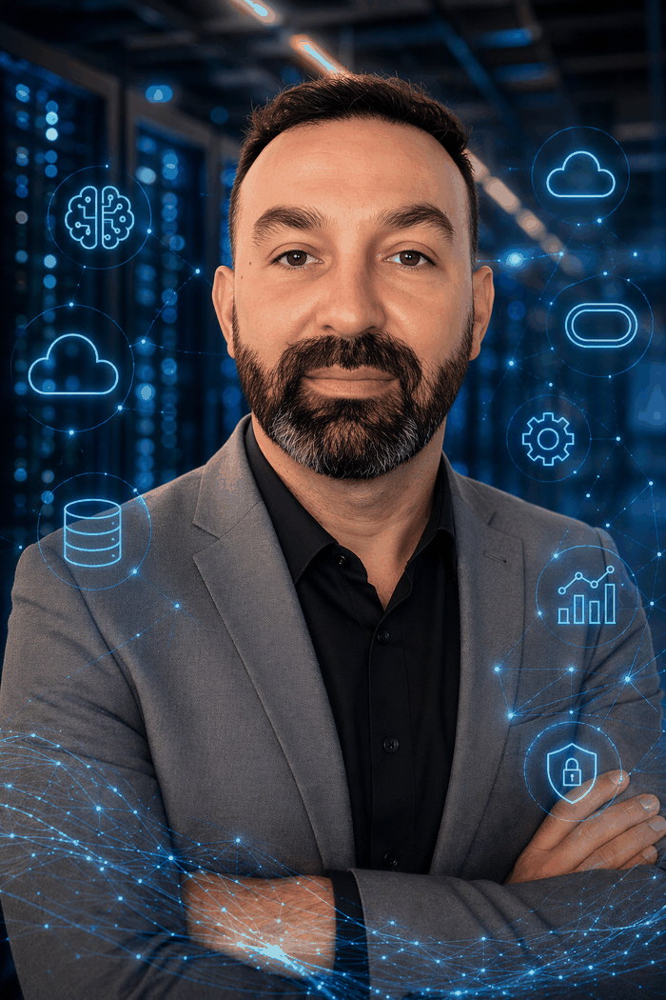

Fábio Oliveira
Oracle Database & AI Solutions Architect. For 20+ years I've kept enterprise Oracle estates running. Now I make the data inside them usable by AI: governed, auditable and production-grade.
SQL> select role, focus from fabio; ROLE FOCUS ----------------------------------------- --------------------------------------- Oracle Database & AI Solutions Architect Governed AI access to enterprise data 1 row selected.
Oracle ACE Associate. Based in Rio Grande do Sul, Brazil. Portuguese (EU) and Brazilian citizen, open to roles in the EU, the US or fully remote.

Where I work in the stack
An AI agent asking a question of enterprise data runs through five layers before it reaches a disk. Read it the way a DBA reads an execution plan: from the question down to the hardware that answers it.
Model Context Protocol (MCP) servers on Oracle REST Data Services that give an LLM curated, audited access to production-grade data, with access scoped by origin and sensitive columns anonymized.
MCP, ORDS, Oracle Label Security, PL/SQL anonymization
Semantic search and natural-language queries over data that stays where it lives, next to the relational columns, so SQL filters and vector similarity run in one query.
Oracle AI Vector Search, Select AI, PostgreSQL pgvector, MongoDB Vector Search
Real-time replication and change data capture, including vector columns, from on-premises estates to cloud targets.
Oracle GoldenGate, Data Guard, Debezium CDC
The estates where the most valuable data actually lives: HA/DR architecture, multitenant, migrations and upgrades from Oracle 7 to Oracle AI Database.
Oracle RAC, ASM, RMAN, multitenant, Exadata, ODA, ZDLRA
Automation and infrastructure as code for large estates, on-premises and across five clouds.
Ansible, Python, Shell, Linux, OCI, Azure, GCP, AWS, Huawei Cloud
Results
Numbers from production work at Timestamp, not from a lab.
Environment delivery in a four-generation Oracle modernization (7, 9i, 11g, 19c) across 15 two-node RAC clusters and 55+ PDBs. Contract renewed at close.
Across 500+ Oracle instances under 24/7 SLAs spanning 12 enterprise contracts, for platforms such as Siebel, Flexcube, TIBCO, BAM and OBIEE.
Manual executions per cycle, after standardizing 50+ recurring routines with Ansible, Python, Shell and PL/SQL.
Single databases cloned with RMAN, in zero-downtime upgrades and cross-platform migrations with no unplanned downtime or data loss.
Nightly rebuild of a 19c QA estate with refreshable clone PDBs, so AI use cases are tested on real load with no data on developer workstations.
Consecutive annual PCI-DSS and SOX audits supported with TDE, VPD and Oracle Advanced Security.
Two recent projects
The two sides of the same job: keeping the legacy estate modern, and opening it safely to AI.
Legacy modernization, four generations deep
I led the database and infrastructure workstream of an Oracle modernization that went from 7 to 9i to 11g to 19c under a strict as-is constraint. Target provisioning was automated with Ansible, and a reusable metadata PDB became the unit of delivery.
Environment delivery dropped from two weeks to under four hours, about 95%, and the contract was renewed at close.
Oracle 19c, RAC, multitenant, Ansible
A governed data-access layer for an enterprise LLM
I designed and operate the layer that lets a customer run its own LLM engine against production-grade Oracle data: an MCP server on ORDS exposing 4 curated schemas (about 40 tables), scoped by connection origin, with Oracle Label Security and custom anonymization as guardrails.
Every AI use case clears a real-load QA gate before it reaches production.
MCP, ORDS, Oracle Label Security, refreshable PDB clones
Experience
Oracle production since 2008, the last fourteen years as a consultant on international enterprise projects.
Lisbon, Portugal
Oracle Database & AI Solutions Architect
- Design and operate a governed data-access layer that lets an enterprise customer run its own LLM against production-grade Oracle data, through MCP on ORDS.
- Led the database and infrastructure workstream of a four-generation Oracle modernization across 15 RAC clusters and 55+ PDBs, cutting environment delivery by about 95%.
- Architect and modernize mission-critical Oracle environments across 500+ instances, sustaining 99.95% availability under 24/7 SLAs for 12 enterprise contracts.
- Design HA/DR architectures with RAC, Data Guard, GoldenGate, RMAN and ASM, including zero-downtime upgrades and migrations across Linux, AIX, Solaris, HP-UX and Windows.
- Built and maintain an Ansible automation framework for large Oracle estates, with reusable roles, dynamic inventory and Vault-backed secrets, run from a hardened bastion.
Campo Bom, Brazil
Senior Oracle Database Administrator
- Ran mission-critical payment-processing databases in a fintech environment governed by ISO 27001 and PCI-DSS, on Oracle 9i, 10g and 11g, single instance and RAC.
- Designed backup, recovery and DR with RMAN, Data Guard, GoldenGate and Streams, and led 10g to 11gR2 migrations. Also administered Sybase ASE and Replication Server.
São Leopoldo, Brazil
Oracle Database Administrator
- Installed and managed Oracle 9i, 10g and 11g, single instance and RAC, across production and development, with RMAN backup strategies and DR testing.
- Automated operations with Bash on Linux and Unix, monitored with OEM, Nagios and Zabbix, and deployed Oracle APEX.
Hardware and Linux server maintenance technician
Maintained hardware and Linux servers on Conectiva Linux, working with business applications written in FlagShip and with Oracle databases, while studying to become a computer technician at Colégio Luterano Concórdia.
Writing
Lab work and production incidents, written up on the Oracle4us blog. Every output in these posts comes from a real run.
- From ORA-07443 to ORA-02384: The Rogue Common Profile catcon.pl Built and a PDB Clone ExposedA production multitenant incident traced through the data dictionary.
- From Vector Replication to Semantic Search: Querying an Always Free Autonomous AI LakehouseReplicated embeddings answering the same semantic query, to the last digit, on both sides.
- From a Docker container to a Free cloud lakehouse: replicating a VECTOR with GoldenGate 26ai MicroservicesA VECTOR column replicated from a laptop to an Autonomous database in OCI.
- Patching a Base Database Service (DBCS) DB System in OCI: Console vs dbcli, End to EndA full quarterly patching cycle in OCI, both ways.
- Ask Your Oracle Database in English, Debug It in Brazilian: Select AI on an Always Free LakehouseNatural-language SQL with Select AI, and the four errors it took to get there.
- How to Resolve Missing PDB Service in Oracle 19c Active Data Guard (No GI on Standby)An HA gap that only shows up at shift change.
Certifications and education
Recognized by the Oracle ACE program, and certified across AI, cloud and the database core.
- Oracle AI Vector Search Certified Professional (2025)
- Oracle Cloud Infrastructure 2025 Certified Generative AI Professional (2026)
- Oracle Certified Professional, Oracle Database 19c: RAC, ASM and Grid Infrastructure Administrator (2025)
- Oracle Cloud Infrastructure 2025 Certified Architect Associate (2025)
- Oracle Database Administration 2019 Certified Professional (OCP)
- Oracle Certified Expert, Oracle Database 12c: Data Guard Administrator
- Oracle GoldenGate 12c Certified Implementation Specialist
- Oracle Exadata Database Machine and Cloud Service 2017 Certified Implementation Specialist
- Microsoft Certified: Azure Administrator Associate
- CCP, Certificado de Competências Pedagógicas (certified trainer)
Oracle ACE Associate
Technical content author on Oracle, AI and data infrastructure. ACE profile and verified badges on Credly.
Education
MSc, Computer Engineering, ISCTE Instituto Universitário de Lisboa (2015 to 2017)
BSc, Information Systems, Centro Universitário Feevale (2006 to 2010)
Languages
Portuguese (native), English (full professional), Spanish (limited working).
Get in touch
Happy to talk about governed AI access to enterprise data, Oracle modernization or replication at scale. Email is the fastest way to reach me.
oliveirafv@gmail.com